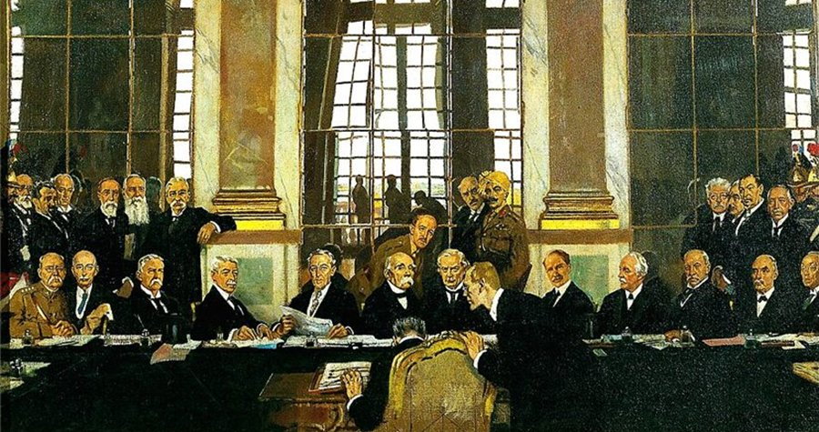
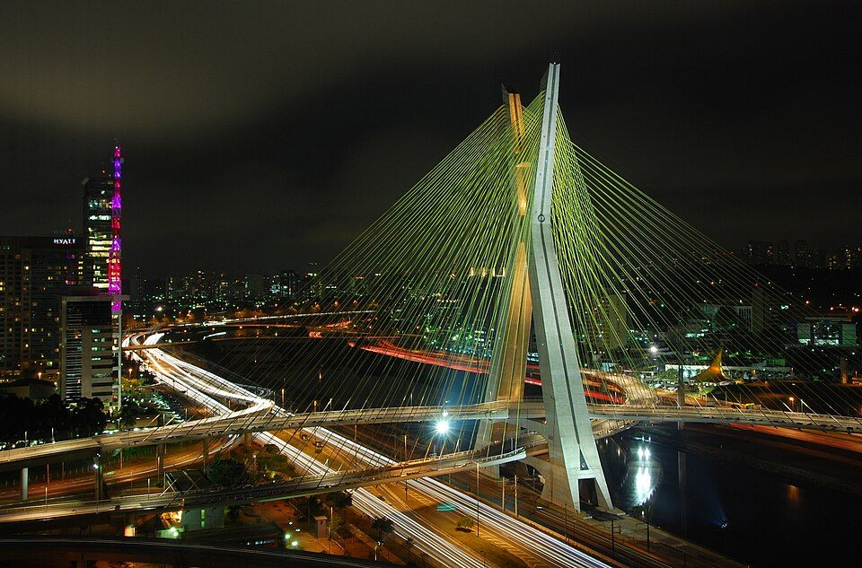
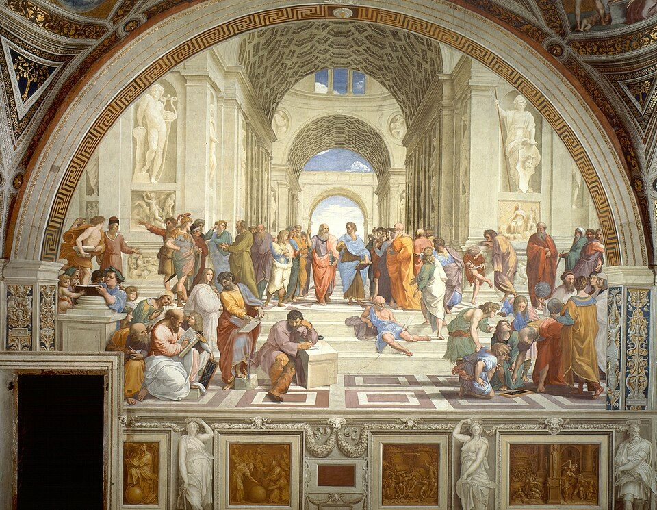

História
Conferência de Paris, Holocausto e ditaduras latino-americanas.
Ver disciplina →Áreas do Saber / Ciências Humanas
História, Geografia, Filosofia e Sociologia.

Conferência de Paris, Holocausto e ditaduras latino-americanas.
Ver disciplina →
Milton Santos, espaço banal e relações internacionais.
Ver disciplina →
Ética, cinema e pressão estética.
Ver disciplina →
Opressão de gênero e projeto de lei.
Ver disciplina →